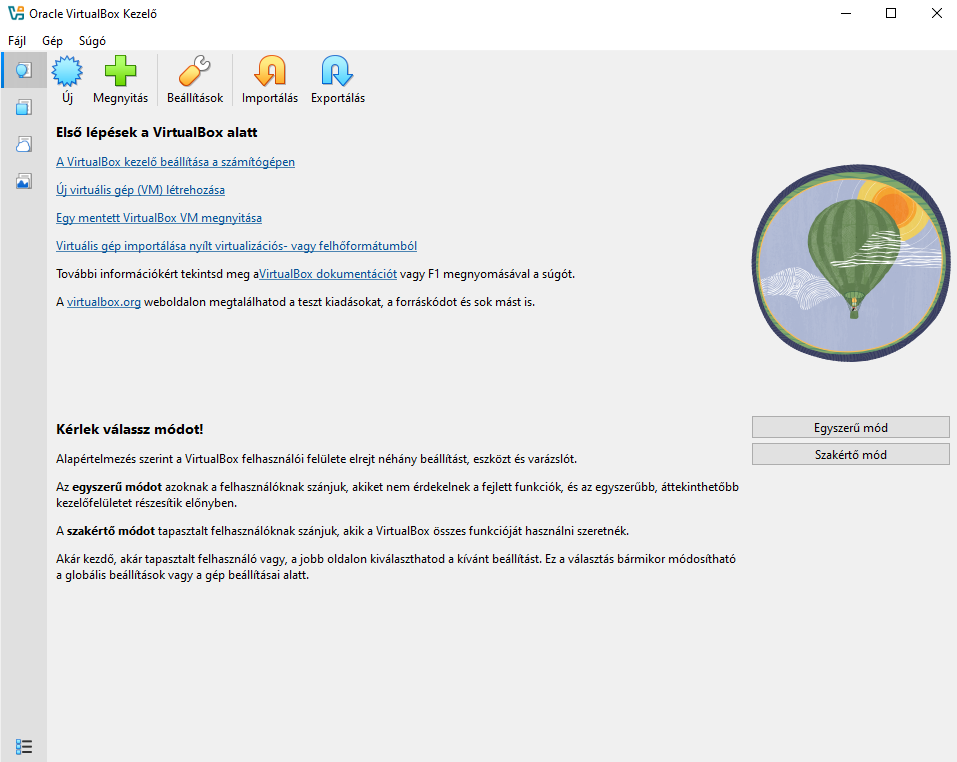
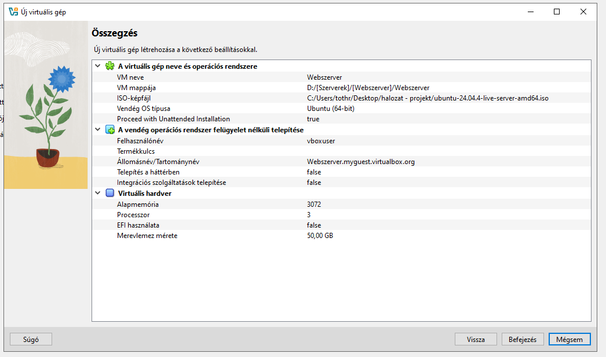
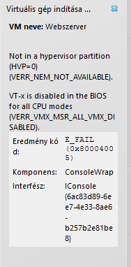
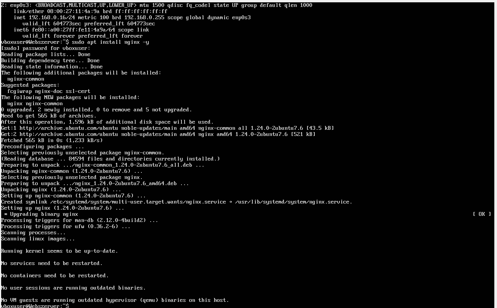
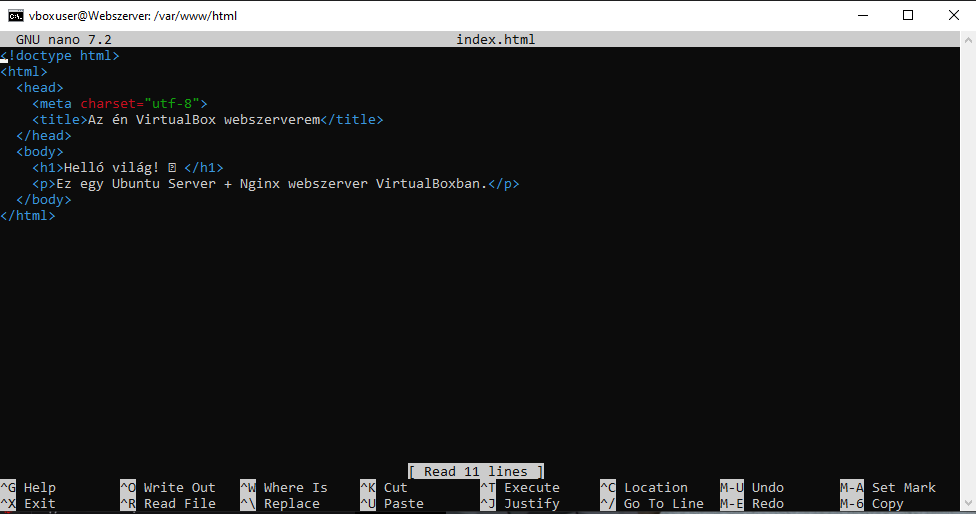

Projekt #3 - Webszerver készítés
Projektfeladat leírása
A projekt célja az Ubuntu szerver környezet gyakorlati megismerése és használatának elsajátítása volt virtualizált környezetben. A megvalósítás során egy Ubuntu Server operációs rendszert telepítettünk és konfiguráltunk VirtualBox segítségével. A feladat részeként megtanultuk az Nginx webszerver telepítését, indítását és alapvető kezelését. A projekt során egy zárt, belső hálózaton működő webszervert hoztunk létre, amely alkalmas statikus vagy dinamikus webes szolgáltatások kiszolgálására. A létrehozott környezet lehetőséget biztosít például egy saját belső AI-rendszer, dokumentumkezelő weboldal vagy más intranetes (csak helyi hálózaton elérhető) alkalmazás működtetésére. A projekt célja továbbá a Linux alapú szerveradminisztráció és webes infrastruktúra működésének gyakorlati megértése volt.
A projektben használt hardveres eszközök
● Számítógép - Intel i5-4690 - 4GB RAM - 50GB HDD -> Virtualboxban létrehozott szervergép ●
● Számítógép – Intel i5-4690 - 16GB RAM - 1TB SSD -> Saját számítógépem ●
A projektben használt szoftveres eszközök
● VirtualBox-7.2.6a-172322-Win ●
● Ubuntu Server ●
● Nginx webszerver ●
● Google Chrome ●
Konklúzió és Önreflexió
A projekt során sikeresen létrehoztunk egy működő Ubuntu Server alapú webszerver környezetet virtualizált infrastruktúrában, amely jó alapot adott a Linux szerveradminisztráció gyakorlati megismeréséhez. A telepítési és konfigurációs lépések segítettek megérteni a hálózati működés alapjait, a szolgáltatáskezelést és a webszerverek felépítését. A gyakorlatban is megtapasztaltuk, hogyan lehet egy zárt, belső hálózaton működő intranetes rendszert létrehozni és üzemeltetni. A projekt során fejlődött a problémamegoldó képességem, különösen a hibakeresés és szolgáltatás-ellenőrzés területén. Megtanultam, hogy egy szerver beüzemelése nemcsak telepítésből áll, hanem konfigurálási és biztonsági szempontokat is figyelembe kell venni. Ha újrakezdeném a projektet, több időt fordítanék a kezdeti rendszertervezésre és a biztonsági beállításokra már az elején. Továbbfejlesztési lehetőségként megvalósítható lenne a rendszer távoli, interneten keresztüli elérése, azonban kizárólag meghatározott felhasználók számára engedélyezve. Emellett fontos lenne további védelmi mechanizmusok beépítése, például tűzfal-szabályok, HTTPS titkosítás, jogosultságkezelés és erősebb hitelesítési rendszer alkalmazása. A jövőben érdemes lenne automatizált mentési és naplózási rendszert is kialakítani a stabilabb üzemeltetés érdekében. Összességében a projekt átfogó betekintést nyújtott a szerverüzemeltetés alapjaiba, és megalapozta a további, biztonságosabb és komplexebb rendszerek fejlesztésének lehetőségét.
Képek és Videók




